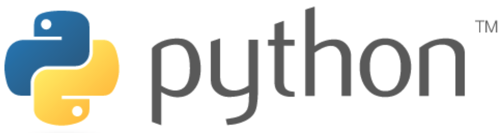
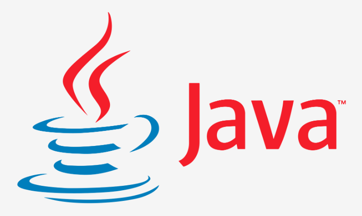
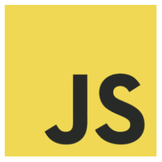
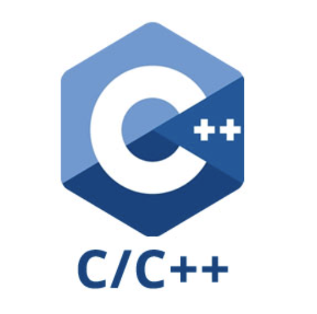
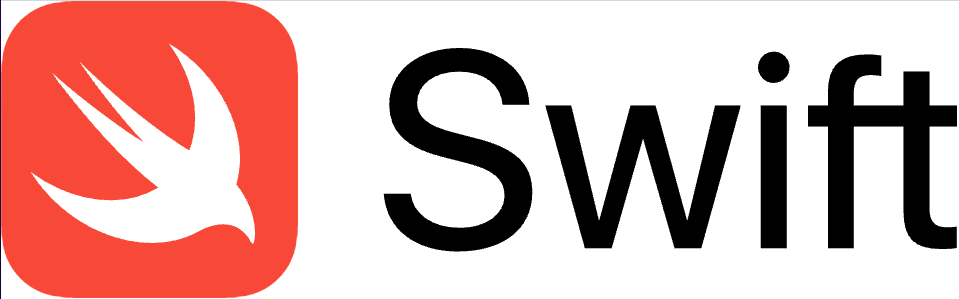

Programming Languages Info
Press tabs to read some basic information about each languages.
Languages are listed in alphabetical order.
Python

Python is a high-level, interpreted, general-purpose programming language. Its design philosophy emphasizes code readability with the use of significant indentation.
Python is dynamically-typed and garbage-collected. It supports multiple programming paradigms, including structured (particularly procedural), object-oriented and functional programming. It is often described as a "batteries included" language due to its comprehensive standard library.
Guido van Rossum began working on Python in the late 1980s as a successor to the ABC programming language and first released it in 1991 as Python 0.9.0. Python 2.0 was released in 2000 and introduced new features such as list comprehensions, cycle-detecting garbage collection, reference counting, and Unicode support. Python 3.0, released in 2008, was a major revision that is not completely backward-compatible with earlier versions.
Python 2 was discontinued with version 2.7.18 in 2020.
Java
JAVA was developed by James Gosling at Sun Microsystems Inc in the year 1995, later acquired by Oracle Corporation. It is a simple programming language. Java makes writing, compiling, and debugging programming easy. It helps to create reusable code and modular programs. Java is a class-based, object-oriented programming language and is designed to have as few implementation dependencies as possible. A general-purpose programming language made for developers to write once run anywhere that is compiled Java code can run on all platforms that support Java. Java applications are compiled to byte code that can run on any Java Virtual Machine. The syntax of Java is similar to c/c++.
*Source: Introduction to Java
JavaScript

JavaScript, often abbreviated JS, is a programming language that is one of the core technologies of the World Wide Web, alongside HTML and CSS. As of 2022, 98% of websites use JavaScript on the client side for web page behavior, often incorporating third-party libraries. All major web browsers have a dedicated JavaScript engine to execute the code on users' devices.
JavaScript is a high-level, often just-in-time compiled language that conforms to the ECMAScript standard. It has dynamic typing, prototype-based object-orientation, and first-class functions. It is multi-paradigm, supporting event-driven, functional, and imperative programming styles. It has application programming interfaces (APIs) for working with text, dates, regular expressions, standard data structures, and the Document Object Model (DOM).
The ECMAScript standard does not include any input/output (I/O), such as networking, storage, or graphics facilities. In practice, the web browser or other runtime system provides JavaScript APIs for I/O.
JavaScript engines were originally used only in web browsers, but are now core components of some servers and a variety of applications. The most popular runtime system for this usage is Node.js.
Although Java and JavaScript are similar in name, syntax, and respective standard libraries, the two languages are distinct and differ greatly in design.
C/C#/C++

What is C?
C programming language is the oldest and most widely used of the three. Dennis Ritchie invented it in 1972 and then published in 1978. Ritchie designed it for the development of a new version of Unix.
Up until that point, the Unix operating system used assembly language, which is the lowest level of programming readable by a computer. The invention of C revolutionized programming and operating systems forever. The rest, as they say, is history.
C is still a low-level programming language, which performs almost as efficiently as assembly code. It provides base-level access to memory, and it requires very little runtime support.
Despite being published 40 years ago, C is still the most widely used programming language of all time. Programmers still use it in operating systems, kernel-level software, hardware drivers, and applications that need to work with older code.
Most old-school programmers will suggest that C is the best programming language to start with because so many newer languages build off of it. It may also offer some security benefits because of its age. The pool of people using it is smaller, making it a less desirable target for hackers.
What is C++?
C++ was developed as an extension of the C programming language. It was created by a Ph.D. student in Denmark named Bjarne Stroustrup. His goal was to enhance C and add object-oriented programming capabilities without sacrificing speed or efficiency.
C++ is considered an intermediate-level programming language, as it builds upon the low-level C language but has more advanced capabilities.
Since the initial publication of C++ in 1985, it has become another extremely prolific programming language. It’s used alongside C in the development of operating systems but also sees use in high-profile server and PC software.
It is a lot easier to understand C++ if you already have a solid foundation in the C programming language; however, you can still learn C++ as your first language if you want to jump right into object-oriented programming.
What is C++?
C# (pronounced “C Sharp”) is a high-level, object-oriented programming language that is also built as an extension of C. It was developed by a team at Microsoft lead by Anders Hejlsberg in 2002. It is based in the .NET framework, but its backbone is still clearly the C language.
C# compiles into byte-code, rather than machine code. That means it executes on a virtual computer that translates it into machine code on the fly. It adds garbage collection, uninitialized variable checking, bound checking, and type checking capabilities to the base C code.
C# typically sees use in internal or enterprise applications, rather than commercial software. It’s found in client and server development in the .NET framework.
* Source: Understanding the Differences Between C#, C++, and C
SQL
SQL (/ˌɛsˌkjuːˈɛl/ (listen) S-Q-L, /ˈsiːkwəl/ "sequel"; Structured Query Language) is a domain-specific language used in programming and designed for managing data held in a relational database management system (RDBMS), or for stream processing in a relational data stream management system (RDSMS). It is particularly useful in handling structured data, i.e. data incorporating relations among entities and variables.
SQL offers two main advantages over older read–write APIs such as ISAM or VSAM. Firstly, it introduced the concept of accessing many records with one single command. Secondly, it eliminates the need to specify how to reach a record, e.g. with or without an index.
Originally based upon relational algebra and tuple relational calculus, SQL consists of many types of statements, which may be informally classed as sublanguages, commonly: a data query language (DQL),[a] a data definition language (DDL),[b] a data control language (DCL), and a data manipulation language (DML).[c] The scope of SQL includes data query, data manipulation (insert, update and delete), data definition (schema creation and modification), and data access control. Although SQL is essentially a declarative language (4GL), it also includes procedural elements.
SQL was one of the first commercial languages to use Edgar F. Codd’s relational model. The model was described in his influential 1970 paper, "A Relational Model of Data for Large Shared Data Banks". Despite not entirely adhering to the relational model as described by Codd, it became the most widely used database language.
SQL became a standard of the American National Standards Institute (ANSI) in 1986 and of the International Organization for Standardization (ISO) in 1987. Since then, the standard has been revised to include a larger set of features. Despite the existence of standards, most SQL code requires at least some changes before being ported to different database systems.
* Source: https://en.wikipedia.org/wiki/SQL
PHP
PHP content.
R
R content.
TypeScript
TypeScript content.
Objective-C
Objective-C content.
Swift

Swift is a general-purpose, multi-paradigm, compiled programming language developed by Apple Inc. and the open-source community. First released in 2014, Swift was developed as a replacement for Apple's earlier programming language Objective-C, as Objective-C had been largely unchanged since the early 1980s and lacked modern language features. Swift works with Apple's Cocoa and Cocoa Touch frameworks, and a key aspect of Swift's design was the ability to interoperate with the huge body of existing Objective-C code developed for Apple products over the previous decades. It was built with the open source LLVM compiler framework and has been included in Xcode since version 6, released in 2014. On Apple platforms, it uses the Objective-C runtime library, which allows C, Objective-C, C++ and Swift code to run within one program.
Apple intended Swift to support many core concepts associated with Objective-C, notably dynamic dispatch, widespread late binding, extensible programming and similar features, but in a "safer" way, making it easier to catch software bugs; Swift has features addressing some common programming errors like null pointer dereferencing and provides syntactic sugar to help avoid the pyramid of doom. Swift supports the concept of protocol extensibility, an extensibility system that can be applied to types, structs and classes, which Apple promotes as a real change in programming paradigms they term "protocol-oriented programming" (similar to traits).
* Source: https://en.wikipedia.org/wiki/Swift_(programming_language)